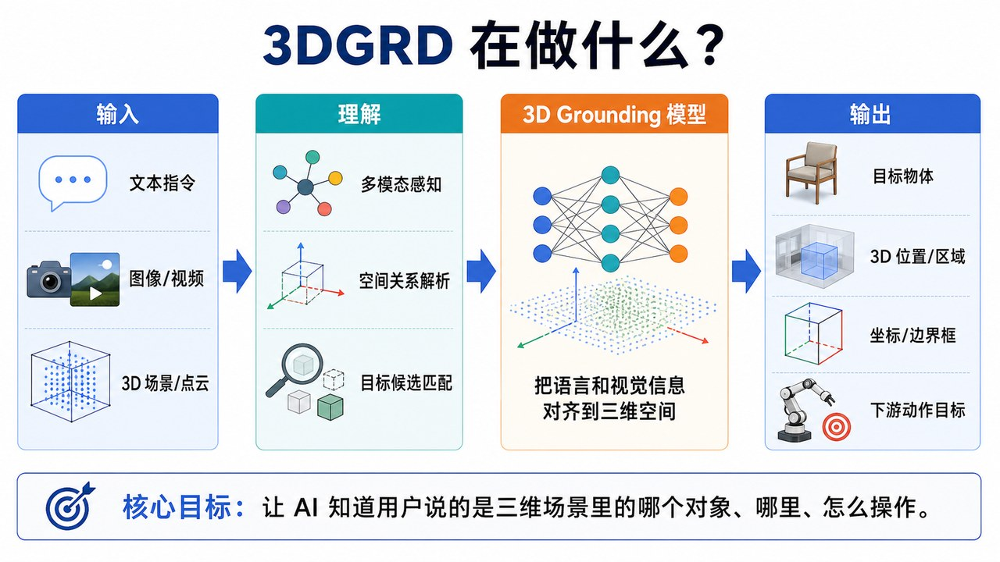

实验结果公网展示模板
这个页面用于验证把实验结果发布到 GitHub Pages 的流程。后续可以把真实的 benchmark 表格、指标曲线、可视化图片、失败案例和配置说明放到同一个目录里。
3D Grounding
Benchmark
Static Report
GitHub Pages
项目示意图

Overall Acc.
78.4%
+4.2 vs baseline
Localization IoU
62.1
+3.8 pts
Referring Success
71.6%
+5.1 vs last run
Scenes Evaluated
420
ScanNet subset
模型对比
| Run | Backbone | Dataset | Acc. | IoU |
|---|---|---|---|---|
| baseline-v1 | PointNet++ | ScanRefer | 74.2 | 58.3 |
| fusion-v2 | 3D + Text | ScanRefer | 76.9 | 60.7 |
| grd-v3 | 3D + Vision + Text | ScanRefer | 78.4 | 62.1 |
任务拆分
可视化样例
Scene 001
target: chair
target: chair
正确定位
文本目标与 3D 边界框匹配，定位结果稳定。
Scene 014
target: table left object
target: table left object
空间关系
模型正确解析“左侧”“靠近”等相对位置描述。
Scene 032
hard negative
hard negative
失败案例
多个相似物体距离较近时仍容易出现候选混淆。